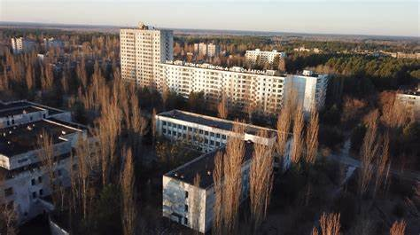

Чорно́биль — місто на Київському Поліссі. Лежить на правому березі річки Прип'ять (притоці Дніпра), при впадінні в неї річки Уж[1]. До аварії на Чорнобильській АЕС 1986 року — районний центр Київської області, після — адміністративний центр зони відчуження та зони безумовного (обов'язкового) відселення[1]. Підпорядкований Державному агентству України з управління зоною відчуження[1]. Чорнобиль має статус вахтового селища, де мешкають близько 2800 осіб вахтового персоналу та близько 100 «самопереселенців»[1].
